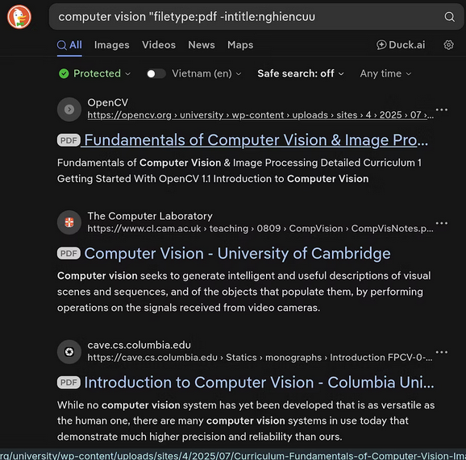
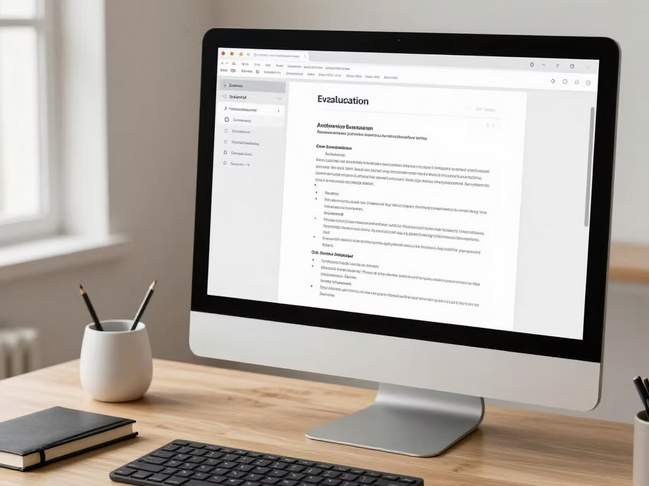

Khai thác tri thức học thuật đòi hỏi khả năng kết hợp các toán tử nâng cao như site:edu.vn hoặc filetype:pdf để sàng lọc nhiễu thông tin và tiếp cận trực tiếp dữ liệu nguồn. Chiến lược này không chỉ tối ưu thời gian tìm kiếm mà còn đảm bảo tính xác thực của tài liệu tham khảo.

Quá trình đánh giá nguồn tin tuân thủ nghiêm ngặt bộ tiêu chí về thẩm quyền (Authority), tính thời sự (Currency) và độ chính xác (Accuracy). Đối với sinh viên kỹ thuật, việc thẩm định tác giả và tổ chức phát hành là bước bắt buộc để xác định giá trị học thuật của dữ liệu trước khi đưa vào nghiên cứu.
Tiêu chí đánh giá:
Mô hình đánh giá độ tin cậy và tính thời sự của nguồn tin:
